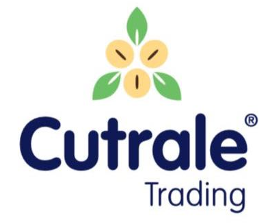
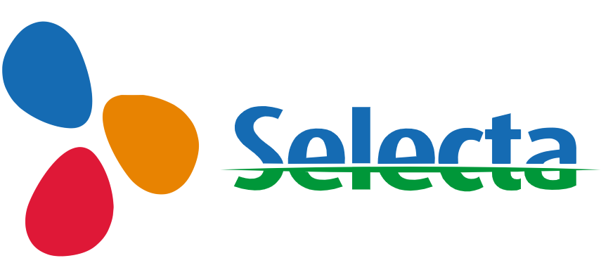

01 / 05
Grãos e derivados
Transporte de soja, milho, sorgo e outros produtos do agronegócio.
Conhecer soluçãoTecnologia, força e logística em movimento.
NOVA FROTA CONECTANDO O AGRODa origem ao destino, transportamos o que impulsiona o país. Soluções rodoviárias para grãos, insumos e cargas com atendimento próximo em cada operação.
Fretes para motoristas e uma rede de postos credenciados em um só lugar. Acesse as informações divulgadas pela Nova Frota.
Relacionamentos que fortalecem nossa operação e conectam o agronegócio aos seus destinos.






Do campo aos destinos mais importantes, nossa operação atende diferentes tipos de carga e necessidades logísticas.
Transporte de soja, milho, sorgo e outros produtos do agronegócio.
Conhecer soluçãoOperações de transporte de insumos com atenção às etapas e aos requisitos de cada carga.
Conhecer soluçãoPlanejamento e cuidado no transporte de cargas agrícolas, conforme os requisitos aplicáveis.
Conhecer soluçãoProgramação e controle para manter o fluxo logístico da produção ao destino.
Conhecer soluçãoSoluções para diferentes necessidades de transporte industrial e regional.
Conhecer soluçãoProcurando novas oportunidades na área de transportes e logística? Conheça nosso canal de candidatura e acompanhe as vagas divulgadas.
Conheça as orientações para apresentar seu currículo e manifestar interesse em fazer parte da equipe.
Quero enviar meu currículoO contato inicial é feito pelo atendimento regional. O currículo é anexado por você na conversa.
Carregando oportunidades...

Unimos estrutura, parceiros estratégicos e atendimento regional para oferecer uma operação mais organizada, previsível e próxima do cliente.
Contato regional para entender cada necessidade logística.
Coordenação de cargas, rotas e disponibilidade de transporte.
Integração entre frota, agregados e oportunidades no campo.
Atendimento regionalizado e cobertura de importantes estados produtores e corredores logísticos.
Ver regiões e contatosUma jornada simples de atendimento, planejamento e acompanhamento.
Você informa a demanda e os detalhes da carga.
Nossa equipe avalia opções de frota e operação.
Coordenamos a movimentação conforme o combinado.
Seguimos próximos até a conclusão da entrega.
Motoristas e transportadores encontram no Grupo Vale do Araguaia um caminho para novas conexões e oportunidades.
Quero ser agregadoConverse com nossa equipe e encontre o atendimento da sua região.